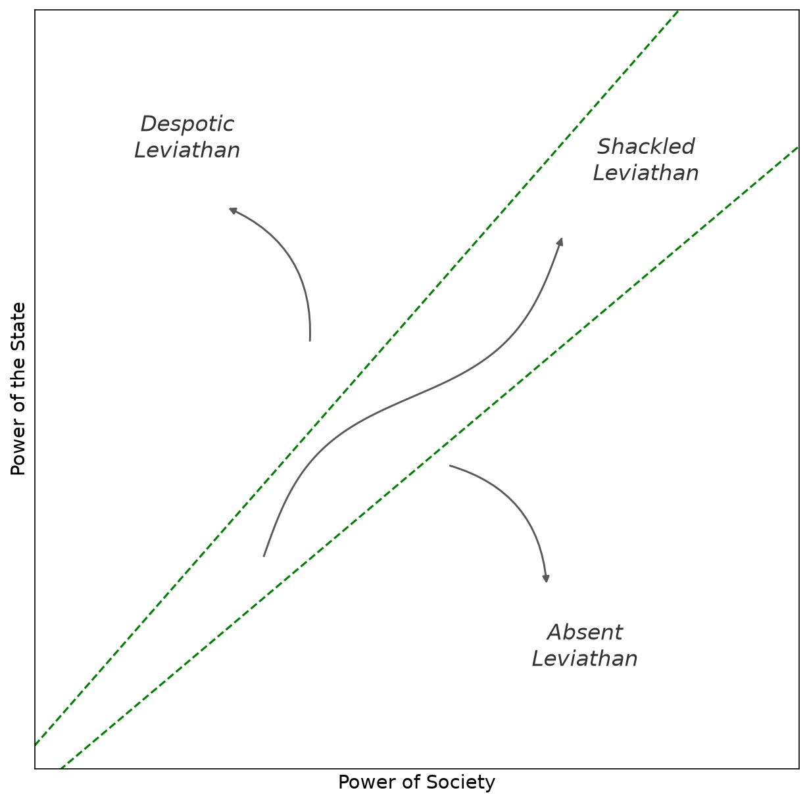
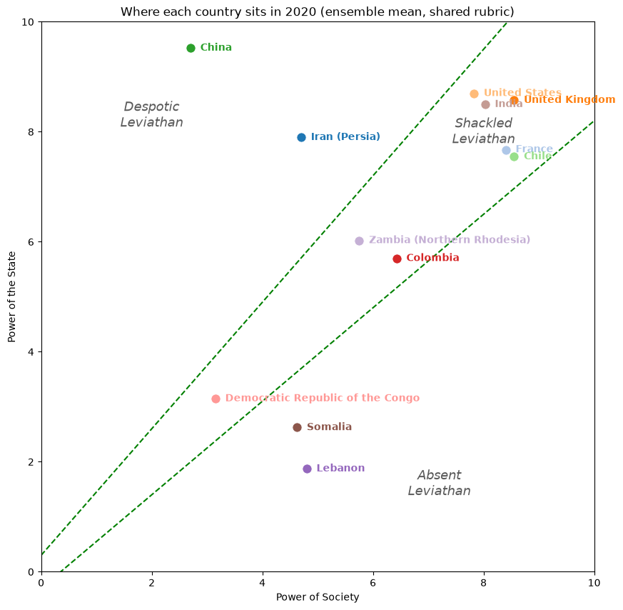
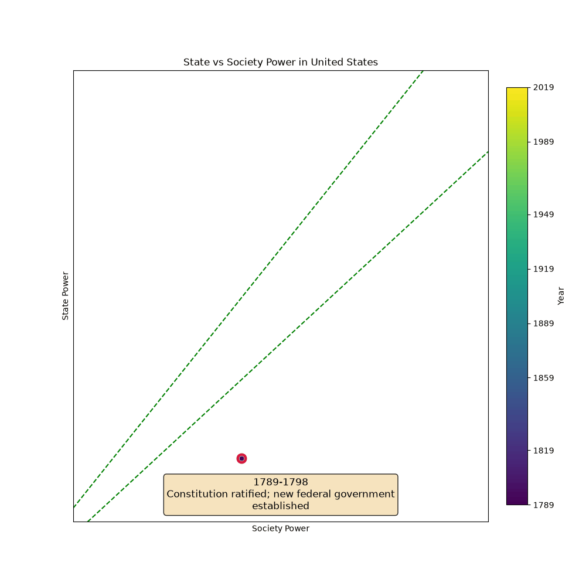

Overview
In The Narrow Corridor: States, Societies, and the Fate of Liberty, Daron Acemoglu and James A. Robinson — awarded the 2024 Nobel Prize in Economics for the body of institutional research this book belongs to — trace national histories as paths through a two-dimensional (state power, society power) space, with a narrow corridor between the two axes where liberty is sustained. The book, however, plots none of these paths: quantifying the two axes at each historical moment is the labor-intensive, judgment-laden task that has kept the framework qualitative.

This project asks whether a large language model (LLM) can operationalize it. It scores a country period by period — using chain-of-thought prompting (events first, then a score) and in-context anchoring on prior periods against an explicit 0–10 rubric, returning schema-validated scores — to produce reproducible trajectories that can be checked against an established expert index (V-Dem).
The Atlas
The accompanying short paper builds a twelve-country trajectory atlas — Iran, France, the United Kingdom, the United States, China, Chile, Colombia, the Democratic Republic of the Congo, Lebanon, Zambia, Somalia, and India — chosen so that at least two countries fall in each of the book's four Leviathan types: Despotic, Shackled, Paper, and Absent. It compares four LLMs (Gemini, Claude, GPT, and an open-weight Qwen), checks the scores against the V-Dem expert index, and quantifies inter-model agreement. Because every country is scored against the same fixed rubric, all twelve sit on one shared map of the book's regions.

How It Works
The tool is a provider-agnostic Python package (via LiteLLM) that scores any country over any period range, caches responses so re-runs are free, and can plot a trajectory or animate it to reveal each period's key event. A build step turns a directory of runs into a self-contained, hostable gallery of plots with click-to-play animations. Every run in the paper — 12 countries × 4 models, plus the V-Dem and ensemble atlases — ships with its full prompt and response transcript for reproducibility.
